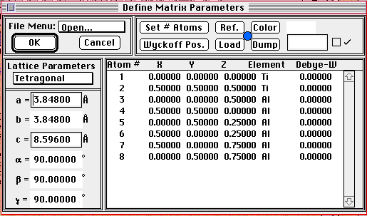
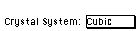
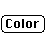
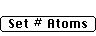
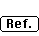
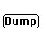
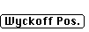

Unit Cell Dialog Box:
PATH...Parameter Menu:Define Unit Cells::Unit Cell Dialog Box
The unit cell dialog box is designed to aid in the rapid specification
of unit cell parameters and atomic positions. It is accessed under the Parameters
Menu and the menu item and is the most important dialog in the parameter
menu:

Crystal Definition Dialog Box
The pop-up menu is an abbreviated version of the standard File Menu.
- The Open... menu item provides the means to open stored Crystal
files. It also automatically allows access to old Diffract v1.0 and later
versions of the crystal file.
- The Save... menu item saves the current parameters as a Desktop
Microscopist file.
- The Save As... option will save the current parameters in Desktop
Microscopist, Diffract or TEXT formats.
- Page Set Up... brings up the standard Page Set Up dialog box
and provides for the selection of the page orientation and font options.
- The Print... menu item will print a fixed format summary of
the current crystal information.
- The Close menu item is the same as the button.
The pop-up menu selects the crystal
family for the current dialog box. The crystal family is used to determine
the possible space groups and which lattice parameters are needed to adequately
define the crystal. Possible values for the crystal family are:
- Cubic
- Tetragonal
- Orthorhombic
- Trigonal
- Hexagonal
- Monoclinic
- Triclinic
The Rhomb. Set option has the Rhombohedral setting for the Trigonal
space groups which are also found with the trigonal space groups. Desktop
provides an easy mechanism to convert between the Trigonal setting and the
corresponding rhombohedral setting, if available. When either Rhomb. Set
or Trigonal is selected. Above the position entry box, the user will see
the following button: . Clicking on this button
will cause Desktop to calculate the corresponding trigonal or rhombohedral
unit cell. The calculation used to convert the cell are described in Space
Groups for Solid State Scientists.
The Lattice Parameters section is used for defining lattice parameters.
These are standard text boxes which can be advanced using the <tab>
key.
This button brings up the standard Apple color wheel.
Use this to set the color for the spots and lines associated with a particular
crystal. See the Color Wheel Dialog or the Tutorial for a description. Crystal
Definition:Color;
 This button brings up a dialog box which allows the
total number of atoms in the unit cell to be set. This option need not be
used if the atomic positions are set using the Wyckoff Positions Dialog
Box. See Set Num. Atoms.
This button brings up the reference dialog box which
allows the entry of bibliographic information. See Reference
Dialog Box.
This button brings up a dialog/alert box which provides
the ability to load crystal parameters into the current definition dialog
box. See Load/Dump Dialog Box.
This button brings up the same dialog box as the above
Load button. However, the function is reversed. Clicking on a crystal will
dump its values and replace them with the current crystal dialog box values.
See Load/Dump Dialog Box.
This button will bring up the Wyckoff
Position Dialog Box which allows the use of space group information
to set atomic positions. Using this option can save the crystallographer
a great deal of time. Before using this dialog, make sure you have selected
the crystal family of interest. The Space Groups available in the Wyckoff
Position Dialog Box are dependent the the currently selected crystal
family.
Author: J.ames T.
Stanley
 Desktop
Manual:Dialog Boxes
Desktop
Manual:Dialog Boxes
Distributed By: Virtual Labs
Last Updated:June 26,1996